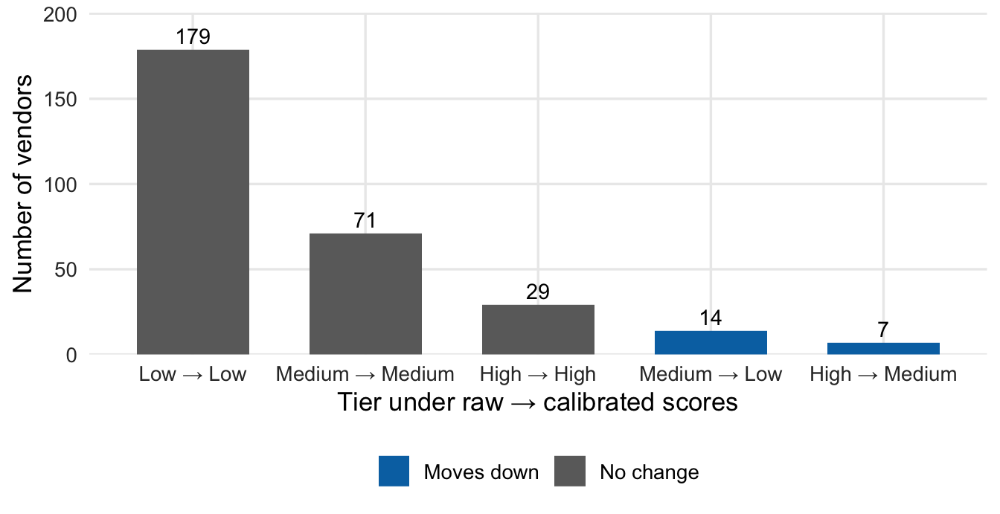

When VendorScore says a vendor has a 10% chance of an incident, do incidents happen about 10% of the time? RiskMetric Systems asserts that its scores are “well-calibrated.” NorthPoint cannot inspect the model, but it can compare the scores with what happened. Here we test the claim on months 31 to 48, which the vendor never saw.
Method in brief
We sort the 5,400 evaluation-window vendor-months into ten equal-sized groups by score, then compare each group’s average score with its observed incident rate. That comparison is a reliability diagram. We summarise it with the Brier score (average squared error of the probabilities; lower is better) and the expected calibration error, ECE (the average gap between score and outcome across groups). A kernel calibration test asks whether the gaps are larger than chance would produce.
To repair the scores without touching the vendor’s code, we fit an isotonic regression (a monotone step-function mapping) that converts raw scores into calibrated ones. It is fit on months 1 to 30 only, so every number below comes from months 31 to 48, which the calibrator never saw. Platt scaling, a smoother alternative, is in the table. Both come from the probcal package.
Figure 1: Reliability diagram, months 31–48. Points are score deciles with 95% intervals; dashed line is the true average incident rate.
How to read the plot. Each dot groups vendor-months with similar scores. Left to right is what the model predicted; bottom to top is what actually happened. A dot on the grey diagonal means the model was right on average. The lines through each dot show the range of plausible outcomes, given that incidents are rare.
What the plot tells you. The highest-scored group sits below the diagonal: the model said about 10.5%, and 7.0% of those vendor-months had an incident. Most lower-scored groups sit above the diagonal, so the model understated their risk. With only about 100 incidents, the intervals are wide. The pattern is suggestive but not conclusive for any single group.
The raw scores are overconfident at both ends. The top-scored group was told it faced a 10.5% risk, but its observed rate was 7.0%, with an interval (5.0% to 9.5%) that excludes the prediction. In 8 of 10 groups the observed rate exceeded the score, mostly the low-scored ones. The kernel test rejects “well-calibrated” (p = 0.026), though with this few incidents we read that as moderate evidence, not proof.
At the portfolio level the picture is kinder: raw scores imply 5.5 incidents a month, against 5.7 observed.
Table 1: Calibration metrics, months 31–48. Lower Brier and ECE are better; the last column compares with observed incidents per month.
Scores
Brier
ECE (equal-size groups)
ECE (equal-width groups)
Incidents per month
Raw VendorScore
0.0191
0.0079
0.0072
5.5
Isotonic-calibrated
0.0186
0.0065
0.0083
4.0
Platt-calibrated
0.0192
0.0082
0.0096
3.6
Observed
NA
NA
NA
5.7
How to read the table. Each row is a version of the scores: the vendor’s raw output, two adjusted versions, and the actual count. Smaller Brier and ECE numbers mean more honest probabilities. ECE is shown with two common ways of grouping scores, because the choice matters. The last column is the number of incidents the scores imply each month.
What the table tells you. Isotonic adjustment lowers the Brier score slightly and lowers ECE with equal-size groups, but raises it with equal-width groups, so the two ECE versions disagree. Re-sampling vendors, the Brier change is -4.8 in units of 0.0001, with an interval of -13.0 to 0.2: close to zero. The adjusted scores also imply only 4.0 incidents a month, well below the 5.7 observed.
Recalibration helps less than hoped. The improvement in Brier score is small, its interval reaches zero, and ECE moves in opposite directions depending on how groups are formed. Worse, the adjusted scores undercount incidents by about 30%. The calibrator learned the months 1 to 30 base rate, but incidents rose afterwards (Page 3), so a mapping fit on older data goes stale.
Show the code
mov <- cal$movesmov$path <-factor(paste(mov$from, "→", mov$to),levels =unique(paste(mov$from, "→", mov$to)[order(mov$move !="No change", mov$from)]))ggplot(mov, aes(path, Freq, fill = move)) +geom_col(width =0.65) +geom_text(aes(label = Freq), vjust =-0.4, size =3.8) +scale_fill_manual(values =c("No change"=unname(okabe_ito["grey"]),"Moves down"=unname(okabe_ito["blue"]),"Moves up"=unname(okabe_ito["vermillion"]))) +scale_y_continuous(expand =expansion(mult =c(0, 0.12))) +labs(x ="Tier under raw → calibrated scores", y ="Number of vendors", fill =NULL)

Figure 2: Vendors by risk tier under raw versus calibrated scores (Low <1%, Medium 1–3%, High >3% monthly probability; illustrative thresholds).
How to read the plot. Vendors are placed in Low, Medium or High risk tiers using their average score over months 31 to 48. Each bar counts vendors by their tier before and after adjustment, for example “Medium → Low”. Blue bars are vendors moving to a lower tier.
What the plot tells you. Most vendors, 279 of 300, stay where they are. All 21 that move go down, none up. The model’s excess confidence mostly inflated vendors at the top of its ranking. The tier thresholds are illustrative, so the exact counts would shift with other cut-offs.
So what
The vendor’s calibration claim does not hold cleanly for NorthPoint’s own outcomes. The largest overstatement sits where decisions matter most, with the highest-risk vendors, which the guidance’s outcomes analysis (§V) is meant to catch. Recalibration is a legitimate overlay (§VII) because the bank adjusts the output and leaves the vendor’s code alone. But it is not a one-off fix: it needs refreshing as conditions move, and it inherits the limits of the data used to fit it.
This is partial validation. It shows that the scores are miscalibrated; it cannot say why, and it cannot tell us whether the proprietary method is conceptually sound.
Committee action
Sound practice suggests including a reliability diagram in every validation pack, and setting explicit calibration thresholds that trigger recalibration, with a scheduled refit of any overlay. The April 2026 interagency Supervisory Guidance on Model Risk Management leaves the thresholds to the bank’s judgement.